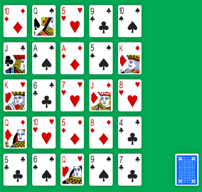
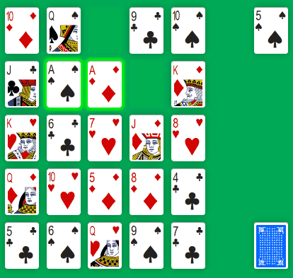
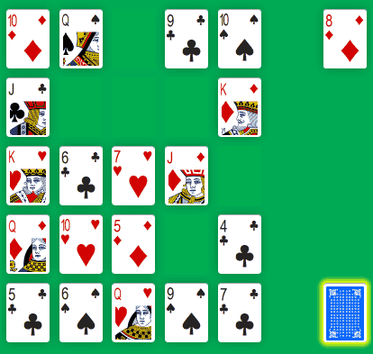
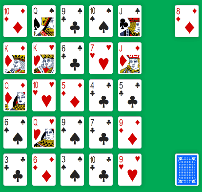

Last month, Solitaire-Play get a new game: Monte Carlo Solitaire. It's not a patience with a lot of strategy but it's easy and restful to play.
Monte Carlo is a pair matching solitaire and uses only one standard deck of 52 playing cards. At the beginning of the game, 25 cards are dealt in a five by five grid. The remaining cards forms a face-down Stock pile on the side.

The goal of Monte Carlo is to remove all cards that make up a pair:

When no more pairs are possible, you have to “redeal” cards to continue the game:


When the Stock is empty, the redeal only remove empty spaces. The game continues until all cards moved to the Foundation (you win) or ends when there are no more pairs (game over).
Monte Carlo Solitaire is a fairly easy patience to get in. You match cards by rank (2 cards with the same “value”) and position (2 cards which “touch” each other). It's also a solitaire playable by children who can find matches and redeal cards when all possible pairs are done.
Despite its name, this solitaire has no connection to the city from Monaco, nor to any casino related game. It's only a free solitaire sometime known as “Double and Quits”, “Weddings”, “Good Neighbors” or “Quits”...
Over all, Monte Carlo is a quick solitaire game to learn, to play and sometime to win, mostly by luck but a bit of concentration can help. So, give this catchy little solitaire a few minutes of your free time and let's play Monte Carlo Solitaire online...
Michel (2017/11/09)